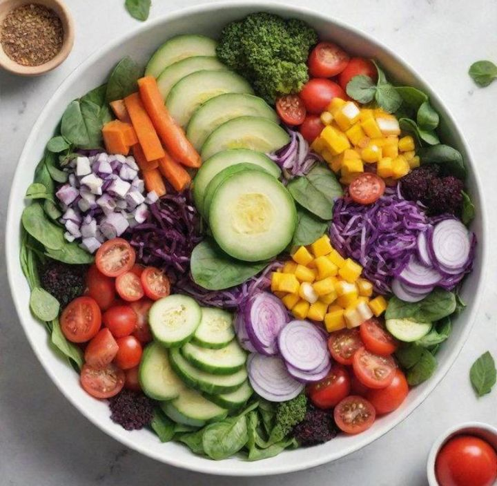
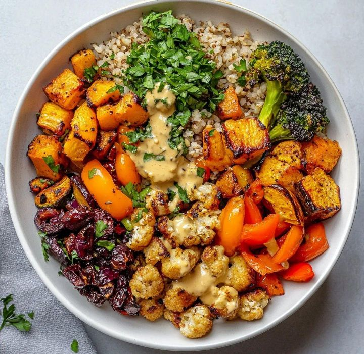
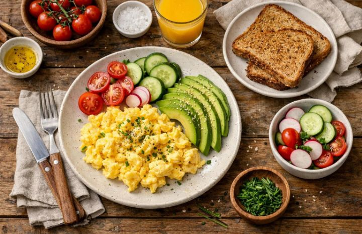

Whole-food recipes
Each dish uses everyday, unprocessed ingredients.
FRESH IDEAS FOR EVERYDAY COOKING
Discover eight quick, whole-food recipes that you can cook tonight
— no processed junk, no guesswork.

SIMPLE BY DESIGN
Each dish uses everyday, unprocessed ingredients.
All recipes are designed to make eating healthy quick and easy.
Filter by name or ingredient and jump straight to the recipe you need.
A HEALTHIER EVERYDAY
Cooking shouldn’t be complicated. These recipes come in under 30 minutes of active time, fit busy schedules, and taste good enough to repeat.
Whether you’re new to the kitchen or just need fresh ideas, we’ve got you covered.
Find a recipe
SOMETHING GOOD IS COOKING
A few fresh ideas to inspire your next meal.

Fresh greens, crunchy vegetables, and a simple dressing.
◷ 15 minutes
A colourful mix of nourishing everyday ingredients.
◷ 25 minutes
An easy start with delicious, simple ingredients.
◷ 10 minutes